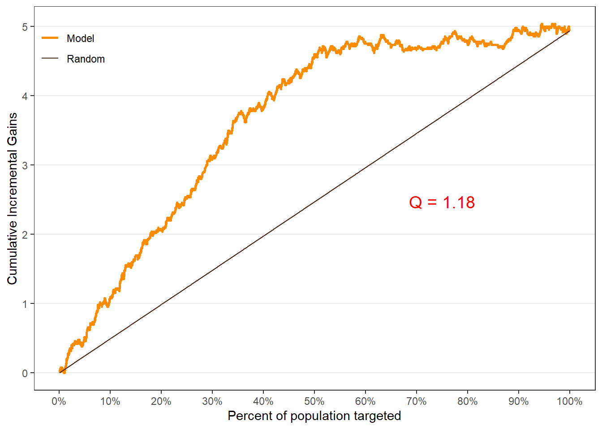
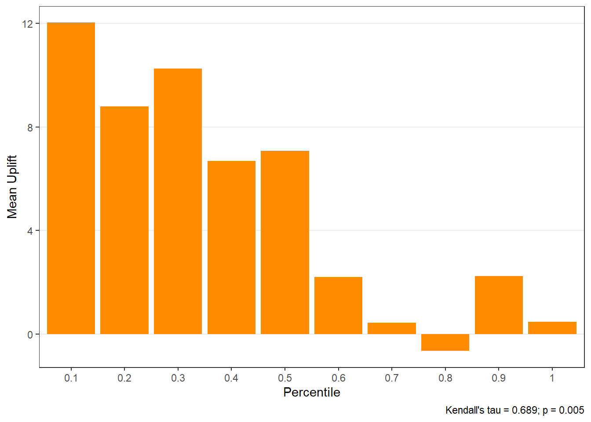
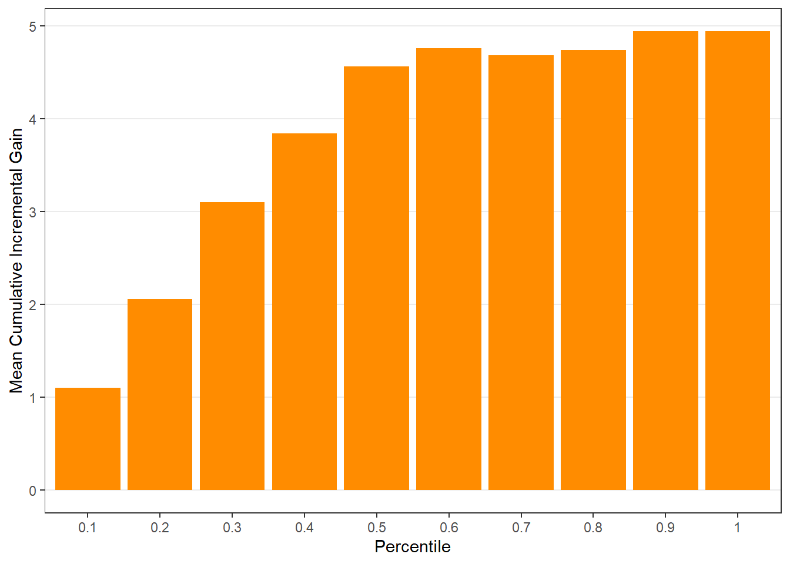
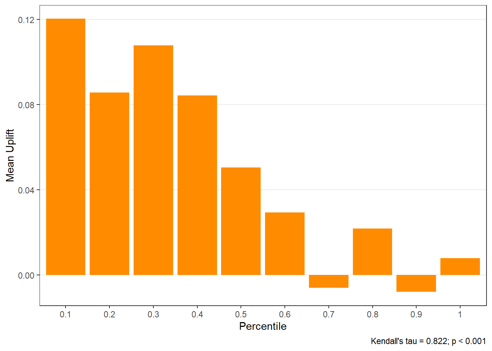
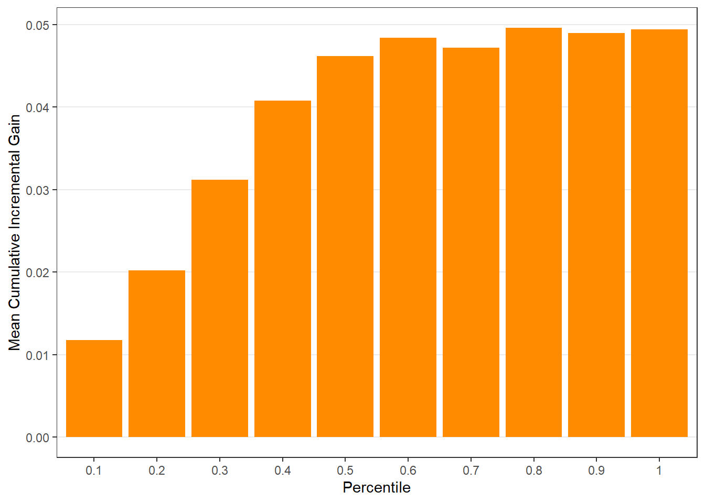
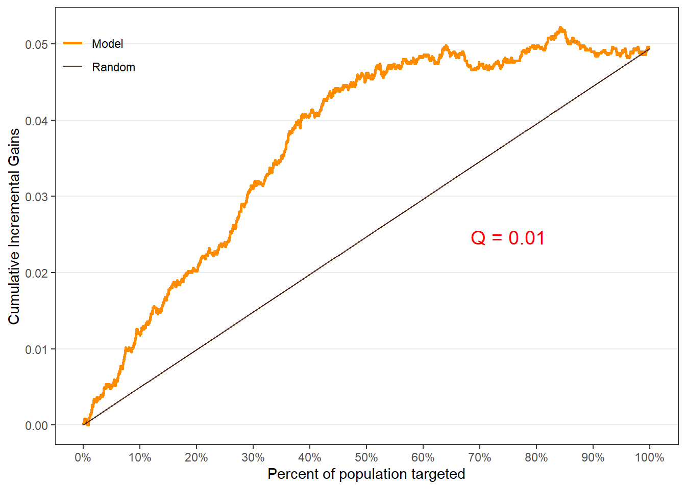
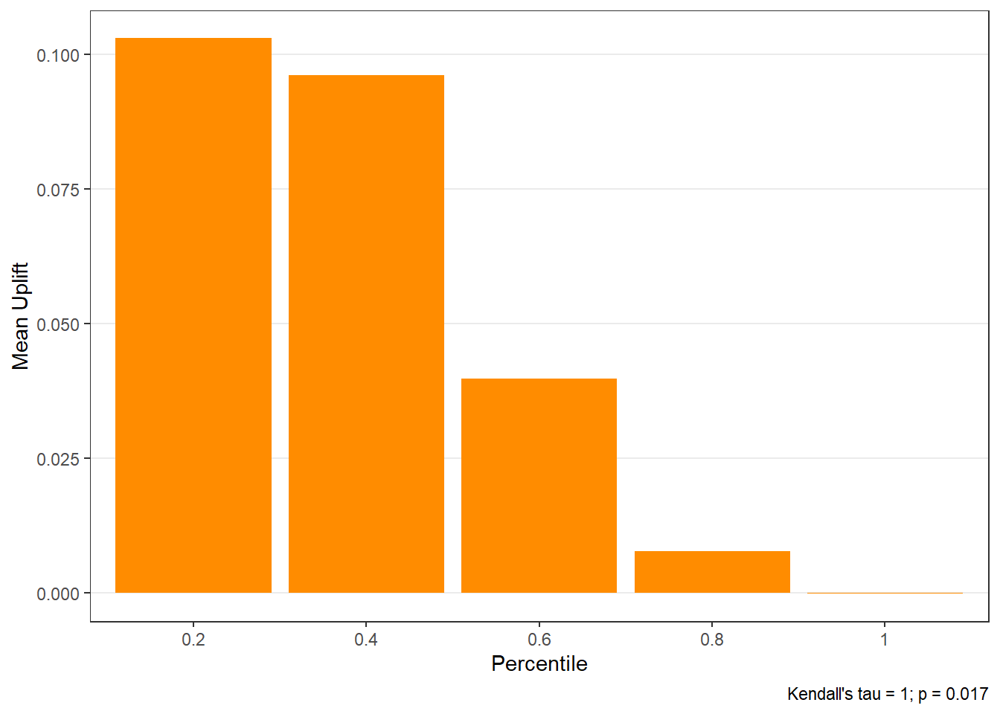
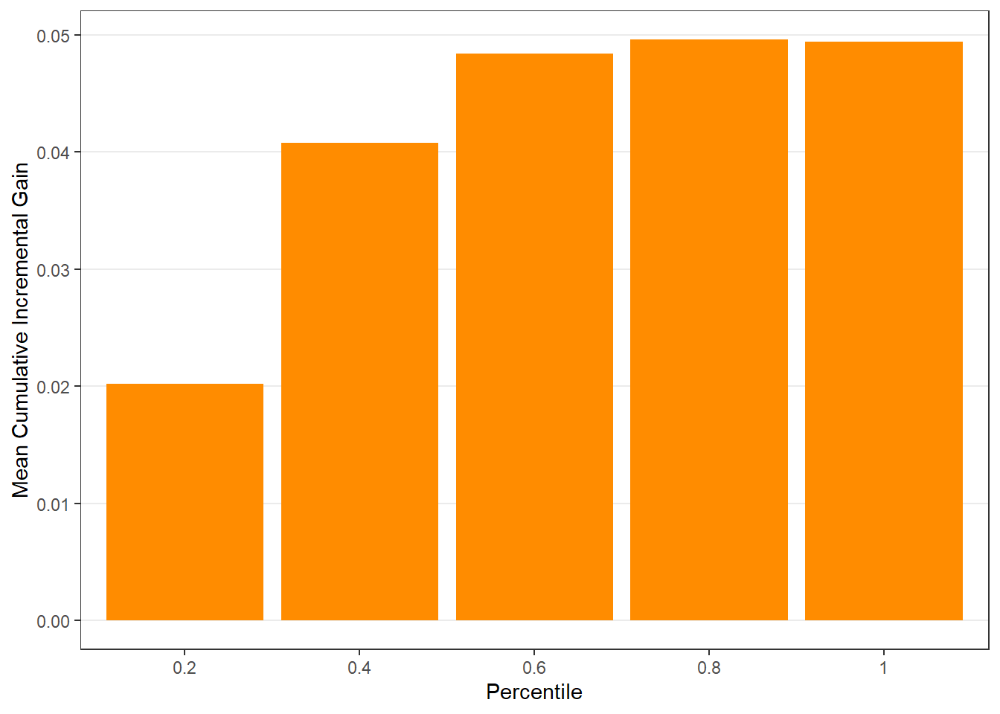

Chapter 8 A/B Testing and Uplift Modeling
Data for this chapter:
The
email.camp.wdata is used from theMKT4320BGSUcourse package. Load the package and use thedata()function to load the data.
8.1 Introduction
While A/B testing and Uplift modeling can be preformed with mostly base R functions, several user-defined functions that are part of the MKT4320BGSUpackage have been created to make the process more streamlined and consistent.
Data for this chapter
8.2 Randomization check
- To perform a randomization check for the treatment and control groups for an A/B test, use the
rcheckfunction. - This function checks if the characteristics/covariates used for uplift modeling from an A/B test were randomly assigned to the test and control groups.
- To use the function, we must pass it a dataframe containing the covariates we want to use to check randomization. We must also provide it with the name of the treatment variable, and the name(s) of the outcome variabe(s) if they are included in the dataframe.
8.2.1 Using the rcheck function
- Requires the following packages:
- fastDummies
- htmlTable (if option
nice="ht"is used) - flextable (if option
nice="ft"is used)
- Usage:
rcheck(data, treatment, outcome=NULL, nice=c("no","ft", "ht"))where:datais the name of the dataframe containing the treatment variable and the covariates.treatmentis the variable name identifying the treatment variable. Must be in quotations.outcomeis the name or names of the variables that identifies the outcome variables. Default value isNULL. Must be in quotations.niceis the format for the output; can be:"no"for standard output"ft"for output using theflextablepackage"ht"for output using thehtmlTablepackage
- Returns: A table containing the results of the randomization check
8.2.1.1 Examples
Example 1: Standard output
variable treatment_mean control_mean sd recency recency 5.810 5.725 3.504 history history 245.995 242.539 253.384 womens womens 0.545 0.539 0.498 newbie newbie 0.497 0.493 0.500 zip_Rural zip_Rural 0.143 0.148 0.353 zip_Surburban zip_Surburban 0.459 0.445 0.498 zip_Urban zip_Urban 0.398 0.406 0.490 channel_Multichannel channel_Multichannel 0.122 0.120 0.326 channel_Phone channel_Phone 0.436 0.439 0.496 channel_Web channel_Web 0.442 0.441 0.497 scale_mean_diff p_val recency 0.024 0.227 history 0.014 0.495 womens 0.011 0.574 newbie 0.007 0.719 zip_Rural -0.014 0.497 zip_Surburban 0.027 0.185 zip_Urban -0.017 0.403 channel_Multichannel 0.006 0.782 channel_Phone -0.005 0.809 channel_Web 0.001 0.968Example 2:
flextableoutputVariable
Mean
SD
Scaled Mean Difference
p-value
Treatment
Control
recency
5.810
5.725
3.504
0.024
0.227
history
245.995
242.539
253.384
0.014
0.495
womens
0.545
0.539
0.498
0.011
0.574
newbie
0.497
0.493
0.500
0.007
0.719
zip_Rural
0.143
0.148
0.353
-0.014
0.497
zip_Surburban
0.459
0.445
0.498
0.027
0.185
zip_Urban
0.398
0.406
0.490
-0.017
0.403
channel_Multichannel
0.122
0.120
0.326
0.006
0.782
channel_Phone
0.436
0.439
0.496
-0.005
0.809
channel_Web
0.442
0.441
0.497
0.001
0.968
8.3 Average Treatment Effect
- To examine the average treatment effect both without control variables with control variables to account for observed heterogeneity, use the
abatefunction. - This function uses linear regression to calculate the average treatment effects both without controls and with controls. The function returns a
flextableobject.
8.3.1 Using the abate function
- Requires the following packages:
- dplyr
- gtsummary
- flextable
- Usage:
abate(model, treatement)where:modelis an existing linear regression (lm) object containing all control variables and the treatment variable. Treatment variable should appear as the first independent variable.treatmentis the variable name identifying the treatment variable. Must be in quotations.
- Returns: A
flextableobject containing the results.
8.3.1.1 Examples
Example:
# Create the 'lm' models ate.visit <- lm(visit ~ promotion + recency + history + zip + womens, data=email.camp.w) ate.spend <- lm(spend ~ promotion + recency + history + zip + womens, data=email.camp.w) # Use the function abate(ate.visit, "promotion")Without
ControlsWith
ControlsCharacteristic
Beta
p-value
Beta
p-value
(Intercept)
0.106
<0.001
0.151
<0.001
promotion
0.049
<0.001
0.050
<0.001
recency
-0.006
<0.001
history
0.000
<0.001
zip
Rural
—
Surburban
-0.053
<0.001
Urban
-0.065
<0.001
womens
0.046
<0.001
p-value
<0.001
<0.001
R²
0.005
0.024
Without
ControlsWith
ControlsCharacteristic
Beta
p-value
Beta
p-value
(Intercept)
0.651
<0.001
1.265
0.011
promotion
0.436
0.108
0.450
0.097
recency
-0.081
0.042
history
0.000
0.703
zip
Rural
—
Surburban
-0.596
0.144
Urban
0.098
0.814
womens
0.049
0.858
p-value
0.11
0.032
R²
0.000
0.001
8.4 Uplift Modling using Regression
To perform a uplift modeling using regression, we will use the
regupliftfunction. This function performs uplift modeling based on either logistic regression (for binary outcomes) or linear regression (for continuous outcomes). The function uses the two-model, indirect modeling approach.In order to use the function, we must first create our base model.
- The base model is usually a model with no interactions included, along with the treatment variable.
- If known interactions are to be used, the base model can include the interactions also.
- The base model must contain the treatment variable as the first independent variable.
Base model examples:
8.4.1 Using the reguplift function
- Requires the following packages:
- ggplot2
- gtsummary (if option
ct="Y"is used) - flextable (if option
ct="Y"is used or if optionint="Y"is used)
- Usage:
reguplift(model, treatment, pdata=NULL,ng=10, ar=NULL, int="N", ct="N")where:modelis a logistic or linear regression model saved results. The model must have been run where the treatment variable was the first term in the right-hand side of the model formula, followed by all independent variables. For optionint="Y", no interaction terms should have been included in the original model.treatmentis the variable name identifying the treatment variable. Must be in quotations.pdatais the data upon which to calculate the lift. Default isNULL, in which case the lift will be calculated using the original model data.ngis the number of groups to split the data for the group output table and the plots. Must be an integer between 5 and 20. Default is 10.aris the aspect ratio for the plots. Default isNULL.intis an indicator if an interaction check between independent variables is desired (int="Y") or not (int="N"). Default is “N”.ctis an indicator if comparison tables between treatment levels is desired (ct="Y") or not (ct="N"). Default is “N”. Rarely used.
- Returns: A list containing the following objects.
$groupis a table of lift results by ordered group based onng$allis the original model data orpdata(if provided) with lift values appended.$plotsis a list containing three plots:$qiniis a Qini plot containing a Qini coefficient$upliftis a mean uplift plot by ordered group$c.gainis a cumulative gain plot by ordered group
$intis an interaction table showing significant potential interactions.$ctis a comparison table between treatment levels.
8.4.1.1 Examples
Using all default options
# Save results as an object visit.uplift <- reguplift(email.visit, "promotion") spend.uplift <- reguplift(email.spend, "promotion") # Examine results visit.uplift$plots$qini
$uplift
$c.gain
$qini$uplift
$c.gain
Using options
# Save results as an object spend.uplift.5 <- reguplift(email.spend, "promotion", ng=5, int="Y") # Examine results spend.uplift.5$plots$qini
$uplift
$c.gain
Interaction
Control
womens:zipSurburban
0.057
womens:zipUrban
0.006
1 Values are p-values for interaction
2 Outcome = visit
3 Control: promotion = 0
4 Treat: promotion = 1
8.5 LIFT Plots
- To get LIFT plots based on an uplift modeling object, use the
liftplotfunction. - This function creates a lift plot following uplift modeling. It can create a histogram (if
varis null) or an error-bar plot. For continuous variables, it will create an error-bar for the quintile values of the variable. For factor variables, it will create an error-bar for each level of the factor. It can also create side-by-side error-bar plots for two variables simultaneously by using thebyvaroption.
8.5.1 Using the liftplot function
- Requires the following packages:
- ggplot2
- Usage:
liftplot(data, var=NULL, byvar=NULL, ar=NULL, ci=c(0.90, 0.95, 0.975, 0.99, 0))where:datais the name of the dataframe with the results of an uplift modeling analysis.varis the variable name for which the error-bars should be created. Must be in quotations. Default isNULLfor a histogram.byvaris the variable that identifies second variable if side-by-side error-bar plots are desired. Must be in quotations. Default isNULL.aris the aspect ratio for the plots. Default isNULL.ciis the type of error-var desired. Ignored ifvarisNULL. Must be one of the following ifvaris notNULL:0for error-bars to represent 1 standard deviation0.90or0.95or0.975or0.99for error-bars to represent the desired confidence level.
- Returns: A ggplot object